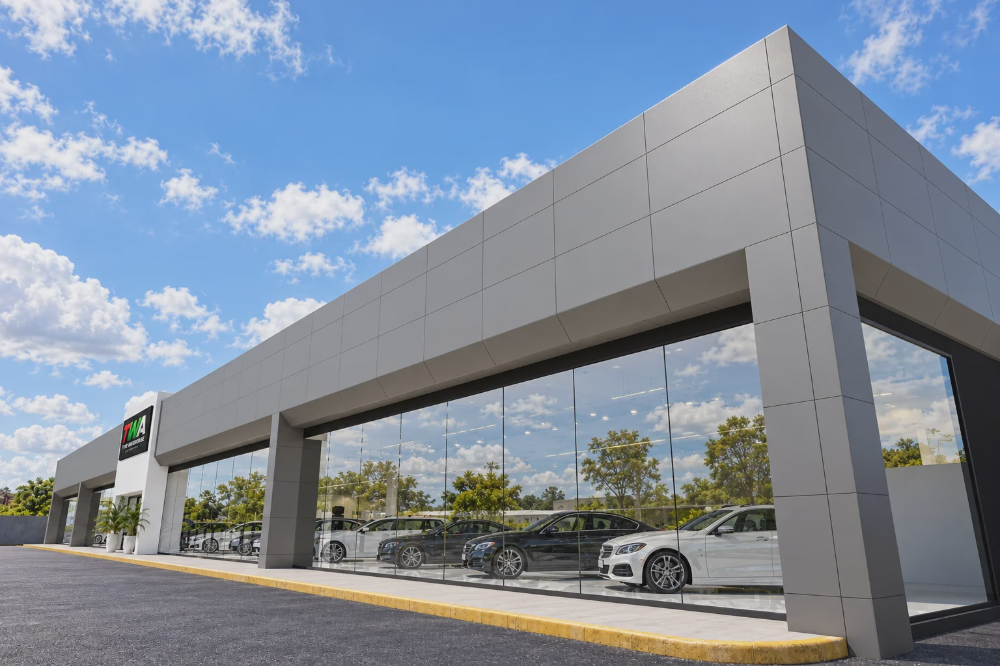
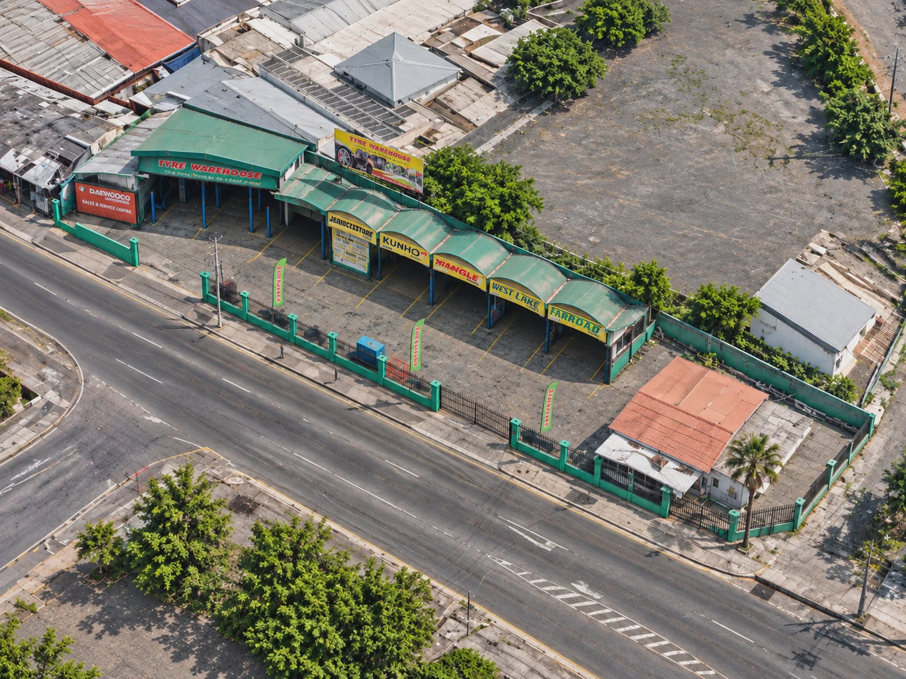
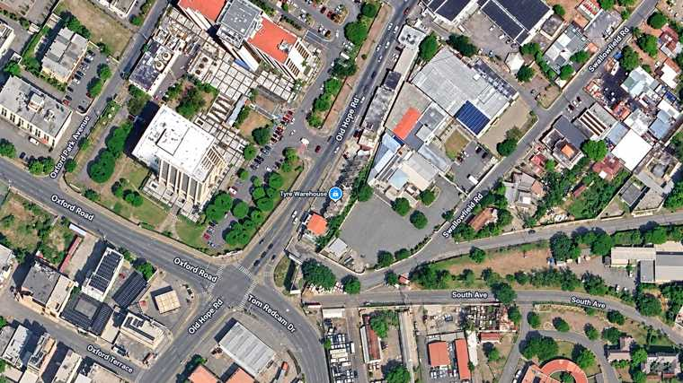
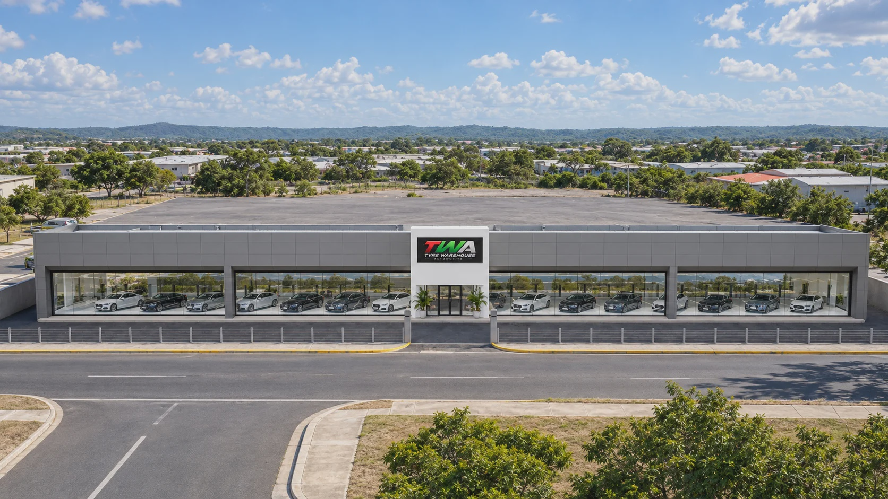
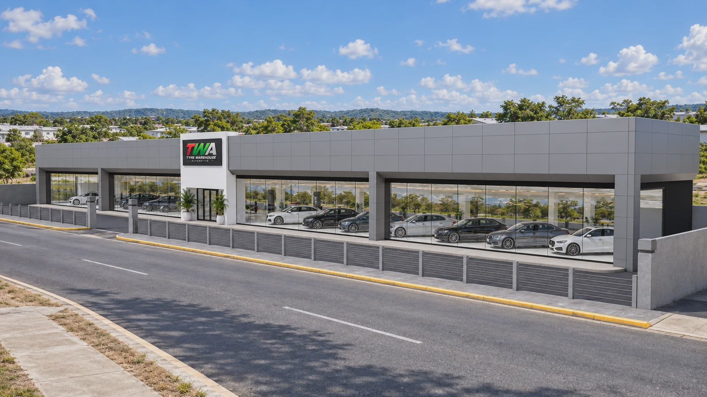
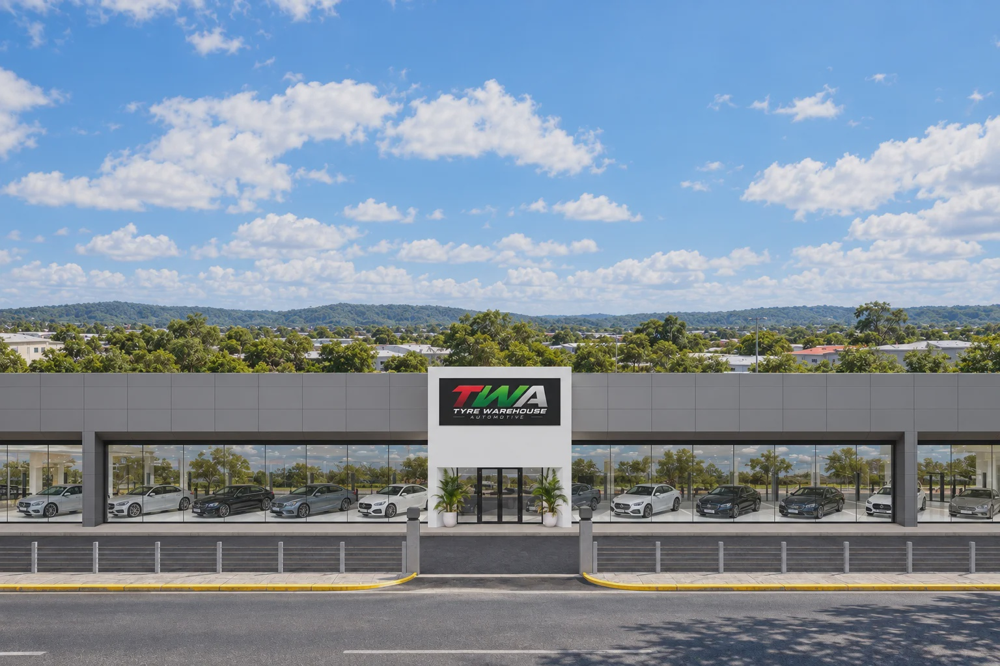
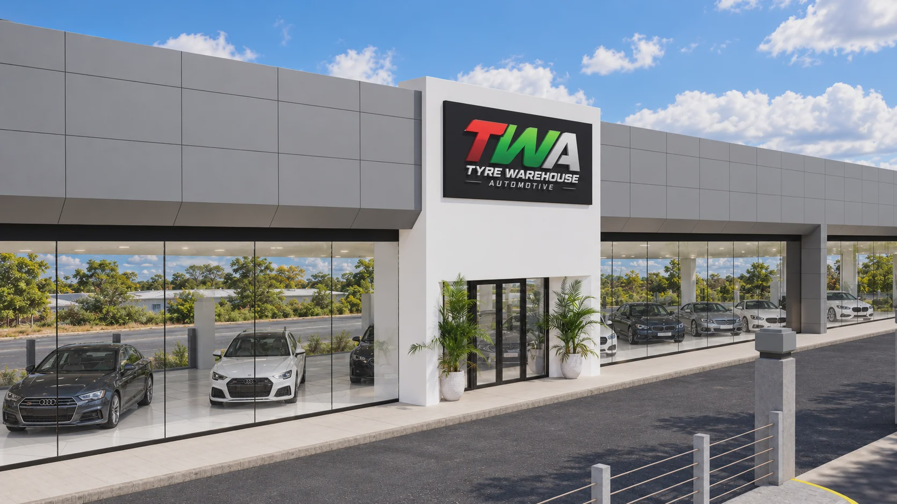
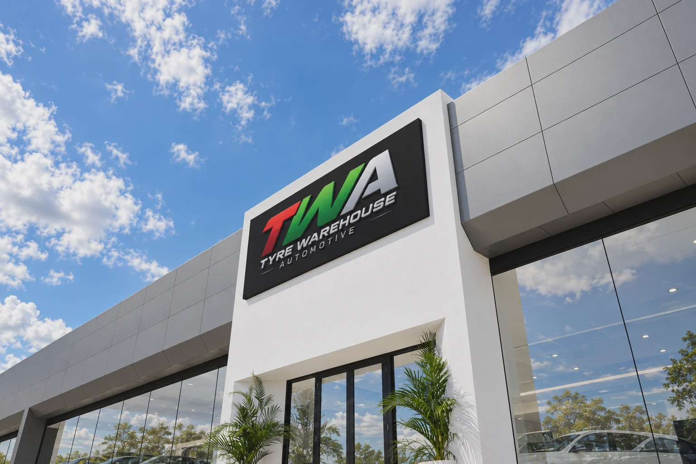

Tyre Warehouse Automotive Showroom conversion / Kingston, Jamaica
A newstandard.
A contemporary destination for vehicle discovery, presentation and automotive retail.
An established site. A new direction.
Old Hope Road · Kingston
The existing Tyre Warehouse service centre forms the foundation for a new vehicle showroom. These two aerial images establish the current service-centre condition and surrounding site context.


From service centre to showroom.
Convert the existing service bays into a contemporary vehicle display showroom.
Full-height glazing, a unified façade and a prominent TWA entrance establish a distinct dealership identity.
The proposed showroom.
Six design views, including the hero perspective. Select an image to view it full size.





Designed to showcase the product.
An open, visually connected display floor that gives every model space to be seen and explored.
A composed architectural backdrop with a clear entrance and prominent identity, adaptable to the final retail branding programme.
Inviting glazing, legible access and a professional sales environment designed to support discovery and consultation.
Concept presentation prepared for Tyre Warehouse Automotive. Renderings communicate design intent; final layout, finishes and specifications are subject to development.
CRIO CREATIVES / PROJECT PRESENTATION
A destination worthy of the vehicles inside.
A defined showroom presence, a considered vehicle display environment and a platform for the next phase of TWA's automotive retail offering.